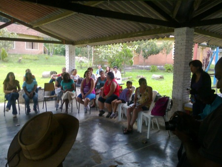
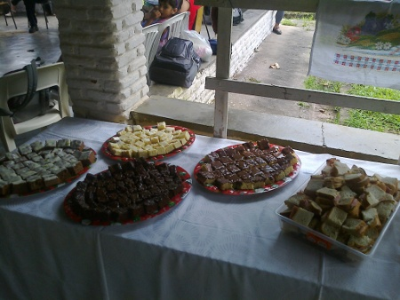

Blog
Semana da Água: dia 2 na Aldeia SOS
Saímos da subprefeitura do Riacho, às 14hs, com a van concedida pela Secretaria de Gestão Ambiental rumo à Aldeia SOS. O plano inicial seria levar 20 pessoas que viriam de Paranapiacaba e de outras regiões do pós-balsa para atividade. Mas como o número de pessoas interessadas foi mais do que o dobro, a professora Jane (de agroecologia) decidiu articular o trajeto com um ônibus escolar - mesmo assim algumas pessoas tiveram que viajar em pé. As pessoas que saíram da sub conosco souberam da atividade por conta do Guia da Cidade. E mesmo sendo moradores de São Bernardo do Campo conheciam superficialmente o Riacho Grande, e nunca haviam estado na região do pós balsa.


O céu estava bastante nublado e com muitos trovões quando saímos. Pensei que teríamos uma tempestade no caminho...mas por sorte o céu "abriu" do outro lado da balsa :)
Durante o caminho conversei bastante com o motorista da van, funcionário público, residente da região desde a década de 1960. Ele relatou as mudanças socioecológicas da região ao longo dos anos, e principalmente a perceptível redução do nível da água da represa.
Penso que um outro projeto bem interessante seria fazer documentários, ou mesmo uma pesquisa aplicada sobre a história do Riacho sob a perspectiva do conhecimento ecológico local da população.


Quando chegamos, as pessoas já nos aguardavam no quiosque em frente à casa destinada para estudos de agroecologia na Aldeia. Atualmente são oferecidos cursos básicos para a população do entorno. Contudo, apesar de receberem as instruções de plantio e cultivo não possuem articulação para a comercialização desses alimentos e muitos produtores acabam descartando ("jogando no lixo") suas safras ou oferecendo como alimento para animais.



Eu havia preparado uma apresentação bem didática envolvendo conceitos e possibilidades de projetos PSA (aqui para baixar), mas não rolou, pois não havia projetor. O que não foi um problema. Ao contrário: todas as pessoas fizeram muitas perguntas e comentários para mim e Angelica. Todo mundo registrou seus contatos em uma lista de presença e explicitou o interesse em ter oficinas de projetos, como: fossas biodigestoras, arquitetura ecológica, construção de mini-estação de tratamento, entre outros (para oferecer esse tipo de serviço na região). Assim como de trabalhar e atividades de compensação ambiental, cedendo suas propriedades para o plantio de espécies nativas, desenvolvendo produção agroecológica orgânica e viveiros de mudas para projetos de recuperação de biodiversidade.
Conversamos sobre muitas possibilidades, inclusive da articulação imediata para a comercialização desses produtos na feirinha de domingo no centro do Riacho. E, também, no desenvolvimento de uma linha orgânica de doces e pães em parceria com o projeto da padaria artesanal que já existe lá - E QUE NOS PRESENTEOU COM UM CAFÉ DA TARDE MARAVILHOSO, com direito a chá de erva-cidreira colhido na hora ;)

Além disso, a Aldeia possui muitos prédios e áreas ociosas que poderiam ser ocupados, inclusive como centros de pesquisa para UFABC.


Comentários recentes
1 ano 31 semanas atrás
2 anos 5 dias atrás
2 anos 2 semanas atrás
2 anos 16 semanas atrás
2 anos 16 semanas atrás
2 anos 18 semanas atrás
2 anos 19 semanas atrás
2 anos 19 semanas atrás
2 anos 19 semanas atrás
2 anos 19 semanas atrás